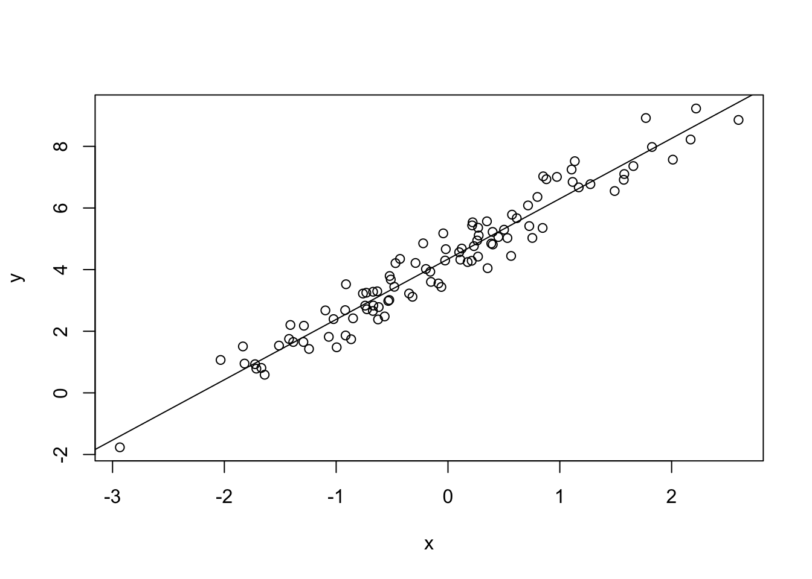

linear model
David Taylor
27/11/2018
Demonstrates simulating a linear model with some noise
set.seed(30) # for reproduceability
x <- rnorm(100) # take 100 randomn samples from a normal distribution mean 0 sd 1
e <- rnorm(100,0,0.5) # and simulate some noise
y <- 4.5 + 2*x + e # intercept 4.5, gradient 2.0 add noiseSo data set simulating a linear relationship with noise can be output:

Now try to model y as a function of x
z <- lm(y ~ x)
str(z) # shows whats in the model## List of 12
## $ coefficients : Named num [1:2] 4.34 1.96
## ..- attr(*, "names")= chr [1:2] "(Intercept)" "x"
## $ residuals : Named num [1:100] 0.3592 -0.4373 0.4709 -0.0648 0.0632 ...
## ..- attr(*, "names")= chr [1:100] "1" "2" "3" "4" ...
## $ effects : Named num [1:100] -41.9585 20.6264 0.453 -0.1616 -0.0578 ...
## ..- attr(*, "names")= chr [1:100] "(Intercept)" "x" "" "" ...
## $ rank : int 2
## $ fitted.values: Named num [1:100] 1.82 3.66 3.32 6.84 7.92 ...
## ..- attr(*, "names")= chr [1:100] "1" "2" "3" "4" ...
## $ assign : int [1:2] 0 1
## $ qr :List of 5
## ..$ qr : num [1:100, 1:2] -10 0.1 0.1 0.1 0.1 0.1 0.1 0.1 0.1 0.1 ...
## .. ..- attr(*, "dimnames")=List of 2
## .. .. ..$ : chr [1:100] "1" "2" "3" "4" ...
## .. .. ..$ : chr [1:2] "(Intercept)" "x"
## .. ..- attr(*, "assign")= int [1:2] 0 1
## ..$ qraux: num [1:2] 1.1 1.02
## ..$ pivot: int [1:2] 1 2
## ..$ tol : num 1e-07
## ..$ rank : int 2
## ..- attr(*, "class")= chr "qr"
## $ df.residual : int 98
## $ xlevels : Named list()
## $ call : language lm(formula = y ~ x)
## $ terms :Classes 'terms', 'formula' language y ~ x
## .. ..- attr(*, "variables")= language list(y, x)
## .. ..- attr(*, "factors")= int [1:2, 1] 0 1
## .. .. ..- attr(*, "dimnames")=List of 2
## .. .. .. ..$ : chr [1:2] "y" "x"
## .. .. .. ..$ : chr "x"
## .. ..- attr(*, "term.labels")= chr "x"
## .. ..- attr(*, "order")= int 1
## .. ..- attr(*, "intercept")= int 1
## .. ..- attr(*, "response")= int 1
## .. ..- attr(*, ".Environment")=<environment: R_GlobalEnv>
## .. ..- attr(*, "predvars")= language list(y, x)
## .. ..- attr(*, "dataClasses")= Named chr [1:2] "numeric" "numeric"
## .. .. ..- attr(*, "names")= chr [1:2] "y" "x"
## $ model :'data.frame': 100 obs. of 2 variables:
## ..$ y: num [1:100] 2.18 3.23 3.79 6.77 7.98 ...
## ..$ x: num [1:100] -1.289 -0.348 -0.522 1.273 1.825 ...
## ..- attr(*, "terms")=Classes 'terms', 'formula' language y ~ x
## .. .. ..- attr(*, "variables")= language list(y, x)
## .. .. ..- attr(*, "factors")= int [1:2, 1] 0 1
## .. .. .. ..- attr(*, "dimnames")=List of 2
## .. .. .. .. ..$ : chr [1:2] "y" "x"
## .. .. .. .. ..$ : chr "x"
## .. .. ..- attr(*, "term.labels")= chr "x"
## .. .. ..- attr(*, "order")= int 1
## .. .. ..- attr(*, "intercept")= int 1
## .. .. ..- attr(*, "response")= int 1
## .. .. ..- attr(*, ".Environment")=<environment: R_GlobalEnv>
## .. .. ..- attr(*, "predvars")= language list(y, x)
## .. .. ..- attr(*, "dataClasses")= Named chr [1:2] "numeric" "numeric"
## .. .. .. ..- attr(*, "names")= chr [1:2] "y" "x"
## - attr(*, "class")= chr "lm"plot(x,y) # replot the variables
abline(z$coefficients) # add the model's trendline